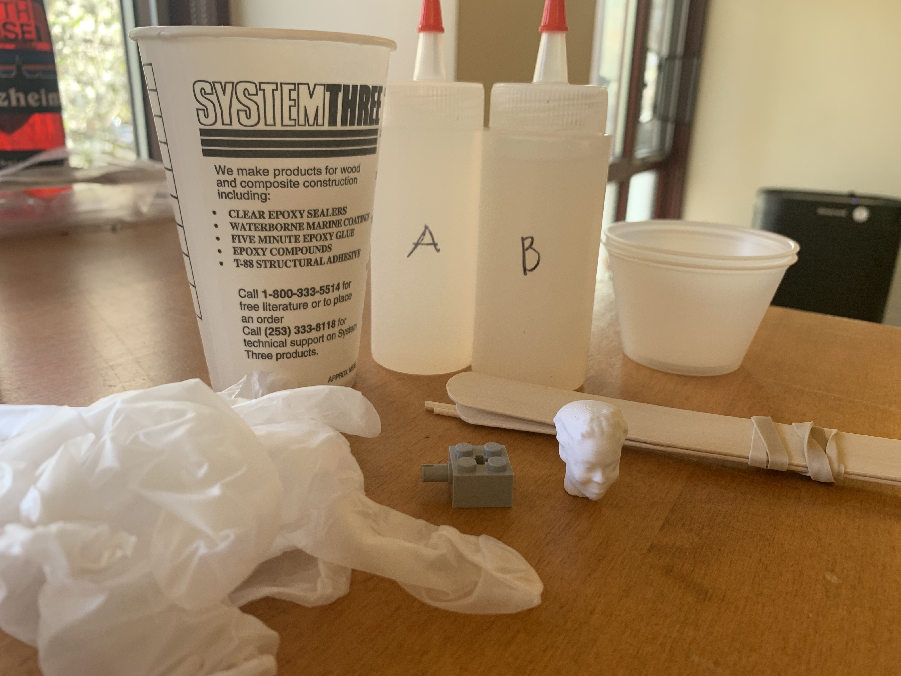
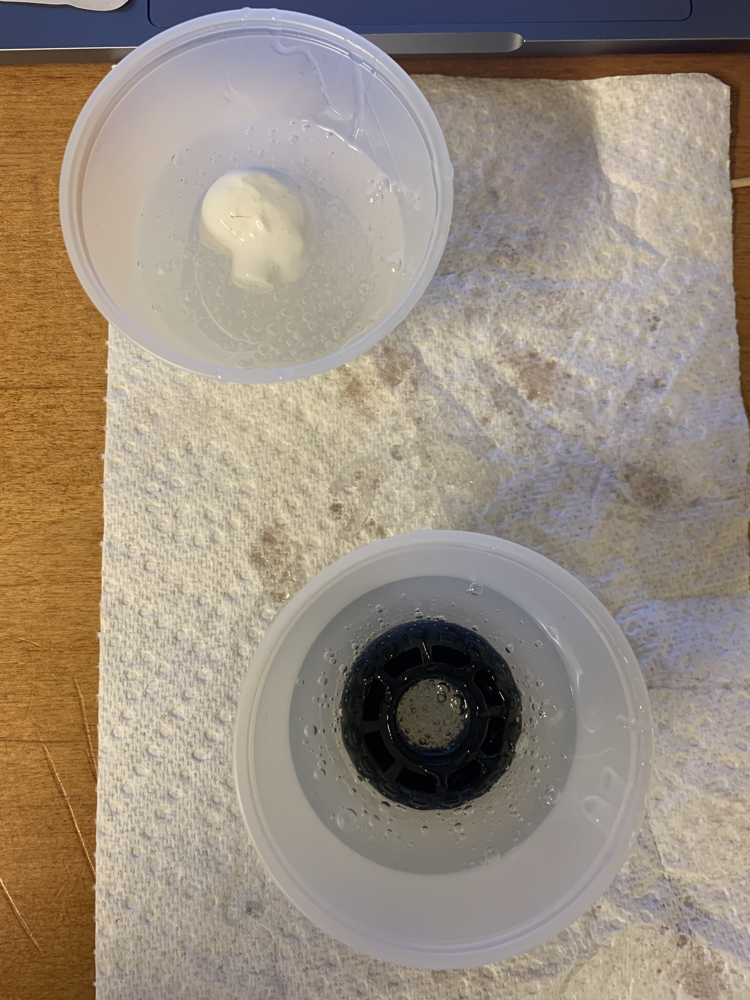
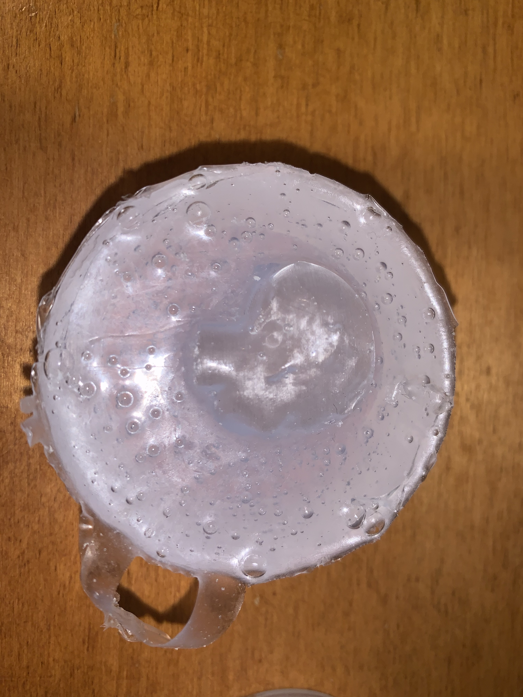
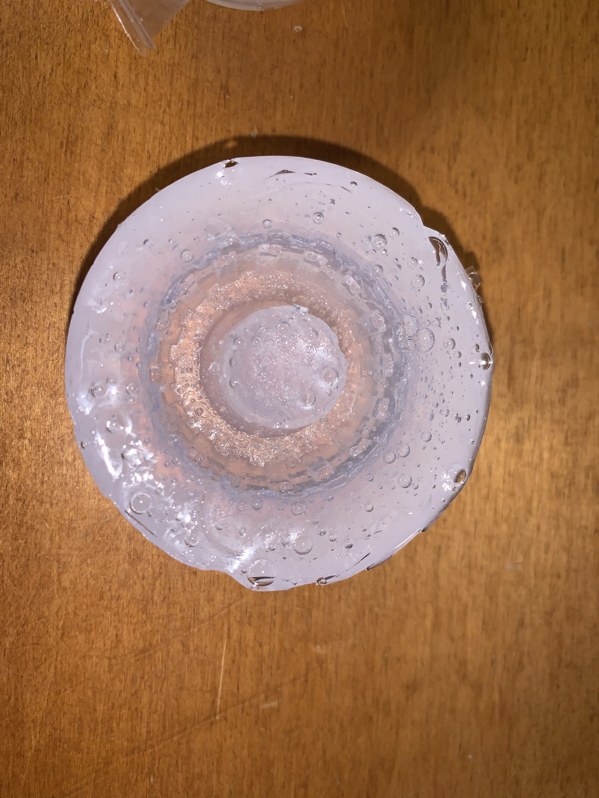
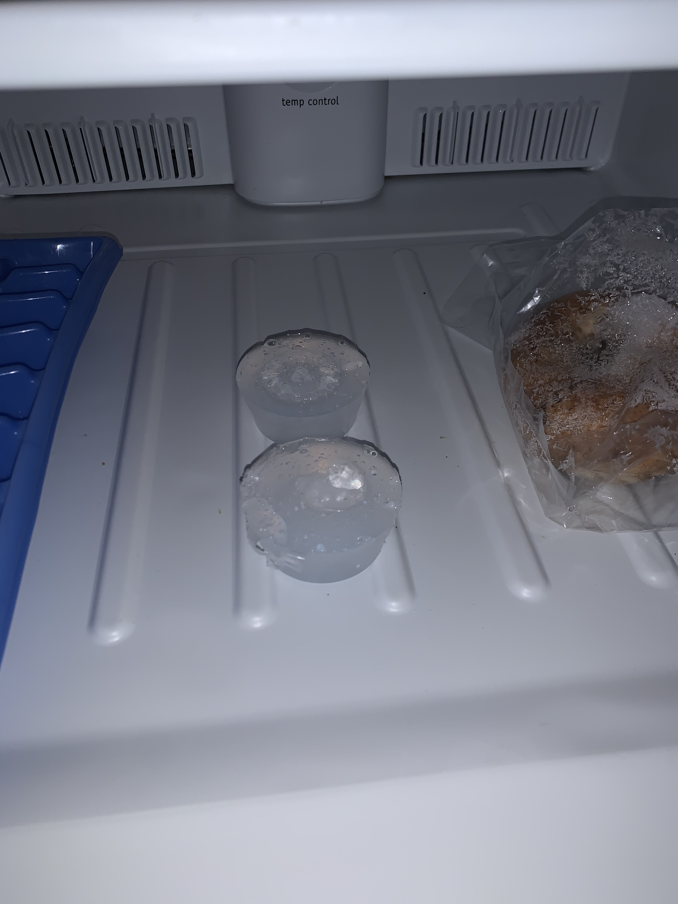
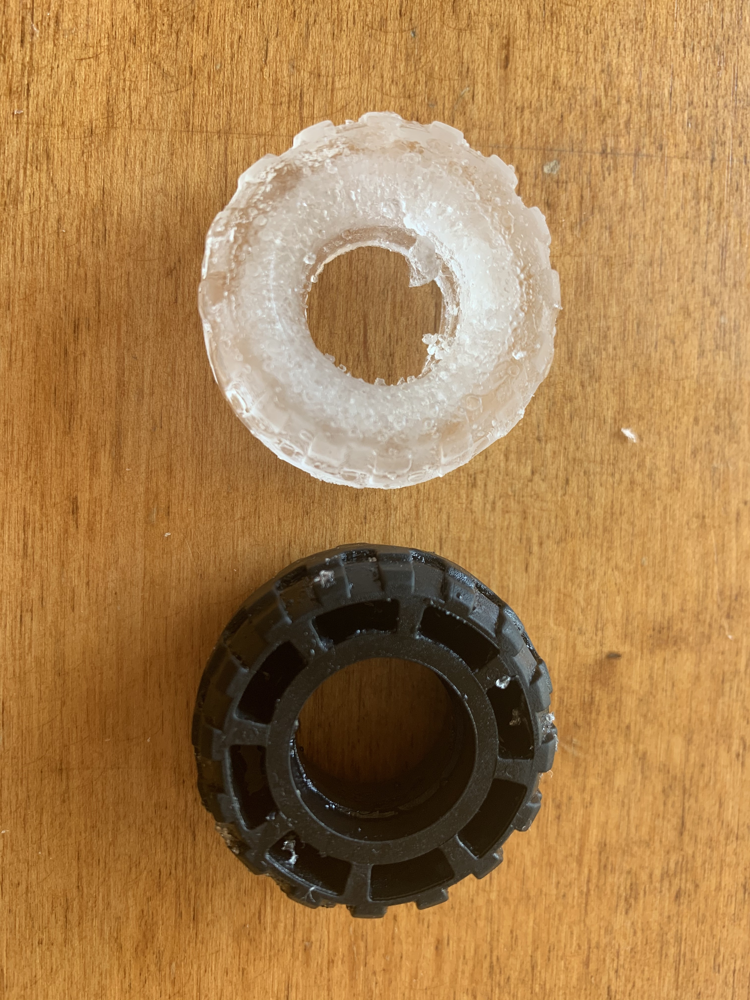
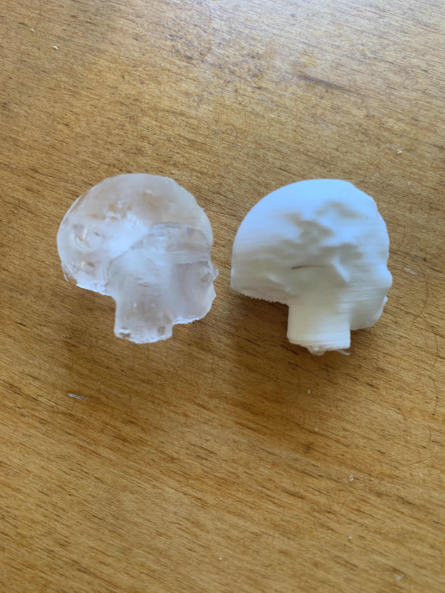
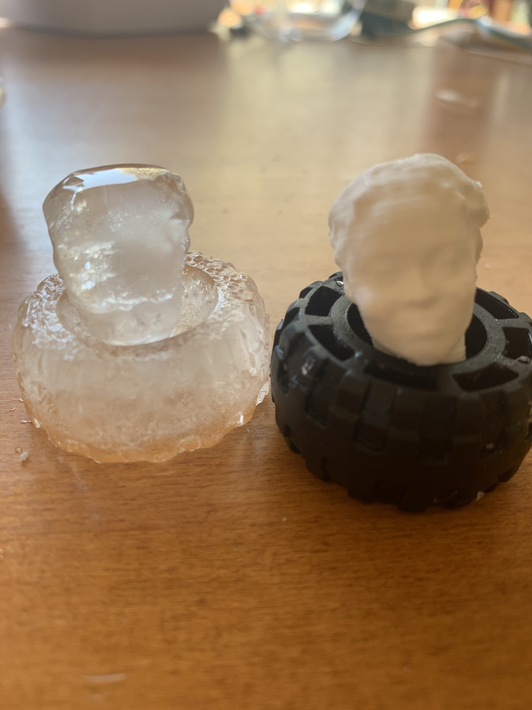

This week we learned about molding and casting! I molded my 3D modeled head from week 5 and a small tire in order to create cool ice sculptures.
I followed this tutorial and collected Sorta-Clear 37 (Parts A and B), stir stick, vinyl gloves, safety glasses, pattern to mold, water as a casting medium (can also use chocolate, butter, jell-o, wax, plaster, bizmuth-tin, etc.), plastic cups, chopsticks, and scissors.
I decided to cast my 3D modeled head and a tire and poured about 3 ounces total (1.5 for parts A and B) in each cup, mixing part B first then pouring part A.
Both objects did not float or sink, so I played around with the objects to place them in a way that would make it easier to remove them later. The tire was easy to place into the mixture, but I wasn’t sure which orientation to place the head at first (face down, face up or sideways). I ended up placing the head sideways to be able to create a mold of the entire shape, but I didn’t submerge it entirely so that it would be easier to remove once the mold cured.
I placed the mold by the window and allowed it to cure for about a day.
It was a little difficult to remove both of the objects. For the tire, I used a chopstick to poke around the tire and slowly pull it out until I was able to poke at it enough to be able to remove it.
For the head, I tried poking around but wasn’t as successful particularly because the part of the head that wasn’t submerged was still covered with silicone. I ended up using scissors to cut along the side of the head and slowly remove the 3D model from the mold.
Here are my molds!
 For the casting medium, I poured water in the molds and left them in the freezer overnight.
The next morning, I removed my ice sculptures from the mold pretty easily and got two beautiful ice sculptures!
  I had a lot of fun trying out molding and casting and would love to try out various object to mold and different casting mediums (especially chocolate YUM!) in the future!